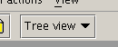

The textmode editor of Pollo is based on the jEdit syntax package. It doesn't really
do anything fancy right now, it needs yet to be further developed.
To switch to the textview use the drop-down in the toolbar.

When saving a file while in text view, Pollo will use the encoding from
the <?xml ?> declaration if it is defined.